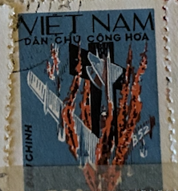
| SOURCE | TITLE| IMAGE MATCH | click to source page |
| pjedro.sk | Vietnam War in Vietnamese postage stamps - Pjedro Imagination |  |
| Pixabay | 20+ Free Cong & Vietnam Photos - Pixabay | 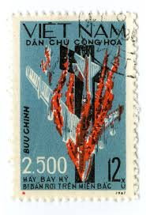 |
| eBay | Vietnam 1967 (495-496) Propaganda | eBay |  |
| Which Vietnamese Camo is this? : r/camouflage | 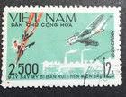 | |
| Stamp Community Forum | Vietnam Postal History During The Vietnam War - Page 7 - Stamp Community Forum | 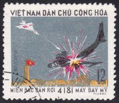 |
| WordPress.com | North Vietnam Propaganda Stamps – The Thrifty Traveller |  |
| Inspired By Maps | 10 Best Vietnamese War Movies To Better Understand Vietnam's Military History! |  |
| U.S. Militaria Forum | Vietnam veteran A4C Skyhawk Bu no 148587 main panel question - AIRCRAFT INSTRUMENTS & EJECTION SEATS - U.S. Militaria Forum | 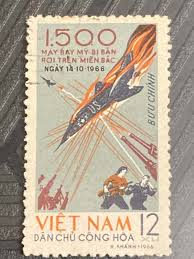 |
| Dreamstime.com | Vietnam on postage stamps editorial photo. Image of coat - 143639096 | 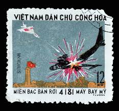 |
| mancryfmf.com | BONUS: Is a stamp illegal if it starts a war? – FMF STAMP PROJECT | 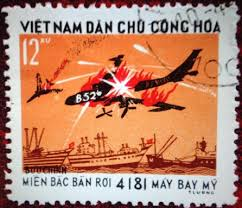 |
| eBay | Vietnam Cong Hoa Stamp for sale | eBay | 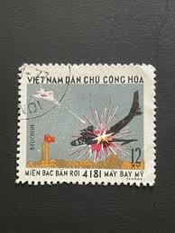 |
| JF-Stamps | Vietnam | JF Stamps Danmark | 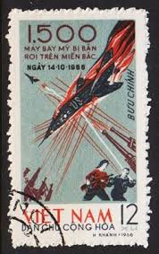 |
| Vietnam's capture of the B52 American flying fortress | 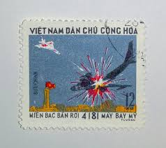 | |
| eBay | 1967 Sc 474/5,set used f1844 | eBay |  |
| Enemy Militaria | North Vietnamese Army Viet Cong 1966 Propaganda Magazine Large Format - Enemy Militaria | 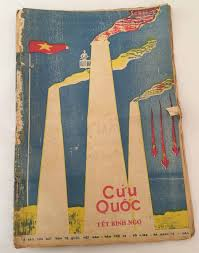 |
| eBay | Viet Nam 374,MNH.Michel 393. 500th US warplane shot down.1965. | eBay | 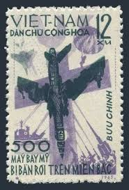 |
| Freestampcatalogue.com | Stamps from Vietnam - Freestampcatalogue.com - The free online stampcatalogue with over 500.000 stamps listed. |  |
| Alamy | 1500th US aircraft brought down over North Vietnam, F-4 in flames, Vietnam war, postage stamp, Vietnam, 1966 Stock Photo - Alamy |  |
| eBay | 1967 North Vietnam Stamps 2500th US Warplane Shot Down Scott # 474-475 MNH | eBay |  |
| seemystamps.com | See My Stamps! - A Place to Show Off Your Stamp Collection | Page 8 | 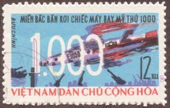 |
| eBay | Rare HTF Vietnam Dogfight B-52 Stamp 1973 Vintage Military Aircraft Postage USED | eBay |  |
| Colnect | Stamp: Boeing B-52 Stratafortress exploding over Haiphong (Vietnam(U.S. Air Force planes shot down) Mi:VN 748,Sn:VN 715,Yt:VN-N 806,Sg:VN N753 📮 | 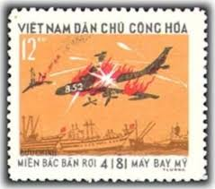 |
| Praporchik | Posters – Prapor | 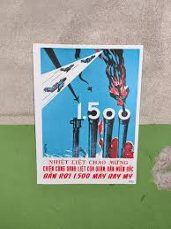 |
| University of Michigan | Warmly welcome the resounding victory of the people and army in the North to shot down 1,500 US air force planes | Political Posters, Labadie Collection, University of Michigan | University of | 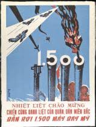 |
| agitdrop.com | Wartime Agit-Prop | Agitdrop | 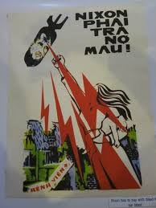 |
| Colnect | Stamp: Dogfight - B-52 brought down over Hanoi (Vietnam(U.S. Air Force planes shot down) Mi:VN 747,Sn:VN 714,Yt:VN-N 804,Sg:VN N752 📮 | 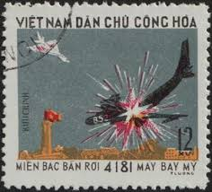 |
| Stamps of two vietnams : r/stampcollecting | 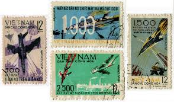 | |
| eBay | VIET NAM 1965 The 500th US Warplane Shot Down FU CV $ 4.50 | eBay | 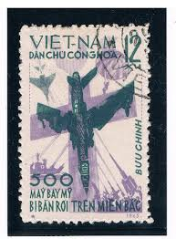 |
| eBay | Vietnam,DR #474-75 used e21.1 12751 | eBay |  |
| Shutterstock | Vietnam Circa 1964 Stamp Printed Vietnam Stock-foto 97492967 | Shutterstock | 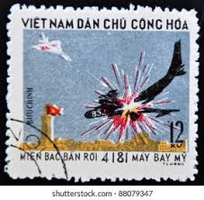 |
| dirkverdoorn.com | Small Named USMC Vietnam War Advisor Lot |  |
| Wikimedia.org | Category:Propaganda posters of South Vietnam - Wikimedia Commons | 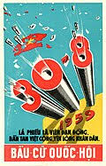 |
| Vietnam Propaganda Art Posters | Hoa Binh - Vietnam Propaganda Art Posters | |
| eBay | Australian Vietnam War Collectables (1961-1975) Books for sale | Shop with Afterpay | eBay Australia | 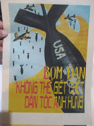 |
| eBay | Vietnam - 250th U.S Aircraft brought down over North Vietnam 1967 #210 | eBay |  |
| Dreamstime.com | Vietnam en sellos foto editorial. Imagen de colección - 143639096 | 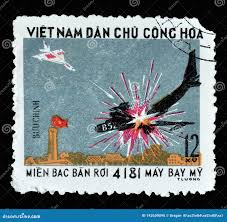 |
| PICRYL | Rebellion (1936 film) - A movie poster for rebellion with three men - PICRYL - Public Domain Media Search Engine Public Domain Search | 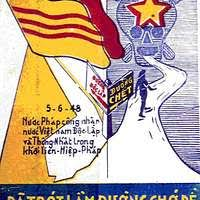 |
| eBay | Vietnam War Propaganda Poster Peace Is Determined To Win No More Bombing 12x16in | eBay | 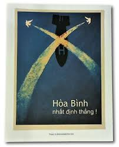 |
| The names of the provinces during the Republic of Vietnam sound so cool: Kien Tuong, Dinh Tuong, Kien Hoa, Khanh Hung, ... : r/VietNamNation |  | |
| Alamy | Vietnamese army post hi-res stock photography and images - Alamy |  |
| The Weekend Explorer (@theweekendexplorer) • Facebook | 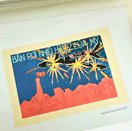 | |
| eBay | NORTH VIETNAM Sc 340-41 NH PERF+IMPERF SETS OF 1965 - SPACE - (CJ25) | eBay |  |
| eBay | 1965 Soviet spaceship "Voshod 1",Komarov,Yegorov,Cosmonauts,Vietnam,Mi.359,MNH | eBay | 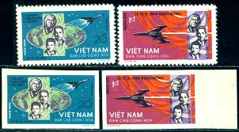 |
| eBay | Vietnam Space Stamps for sale | eBay | 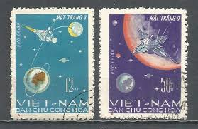 |
| eBay | NORTH VIET NAM # 174-175 MNH RUSSIAN COSMONAUT SPACE FLIGHT (3) Imperforate | eBay | 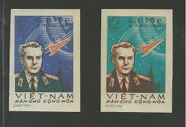 |
| Letterboxd | Hanoi, Tuesday 13th' review by Lencho of the Apes • Letterboxd | 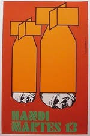 |
| eBay | Vietnam War Poster Victory Shooting Down Over 1500 Air Force Military Aircrafts | eBay | 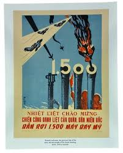 |
| eBay | 1965 North Vietnam Stamps Flight of Voskhod 1 Sc # 340 - 341 MNH | eBay | 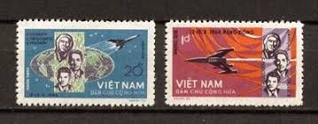 |
| Shutterstock | Postage Stamp Vietnam 1966 1000th Us Stock Photo 278244665 | Shutterstock |  |
| Shutterstock | 76,838 Vintage Postage Stamps Vietnam War Royalty-Free Images, Stock Photos & Pictures | Shutterstock | 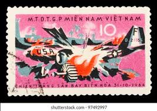 |
| eBay | Vietnam 1965 used stamp Michel # 393 Military, War | eBay | 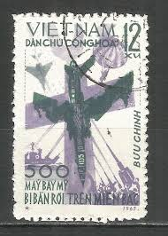 |
| eBay | Viet Nam 423, MNH. Michel 442. 1000th US warplane shot down, 1966. | eBay | 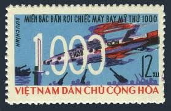 |
| British Museum | painting | British Museum | 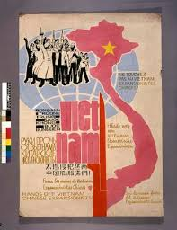 |
| Shutterstock | 38+ Thousand The Vietnam War Royalty-Free Images, Stock Photos & Pictures | Shutterstock | 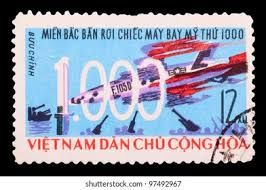 |
| Collector Bookstore | The Viet Nam Zippo: Cigarette Lighters 1933-1975 by Jim Fiorella – Collector Bookstore | 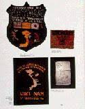 |
| eBay | Vietnam Space Stamps for sale | eBay | 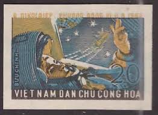 |
| Books On War Australia | Enemy Cannot Stop Our March Vietnam War Propaganda Poster | 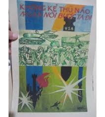 |
| eBay | N.171 -Vietnam- 500th US aircraft brought down over North Vietnam | eBay | 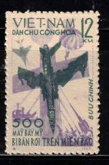 |
| Granger - Historical Picture Archive | Image Search - Symbol Communism - Granger - Historical Picture Archive | 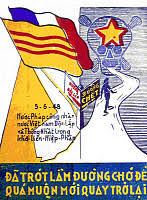 |